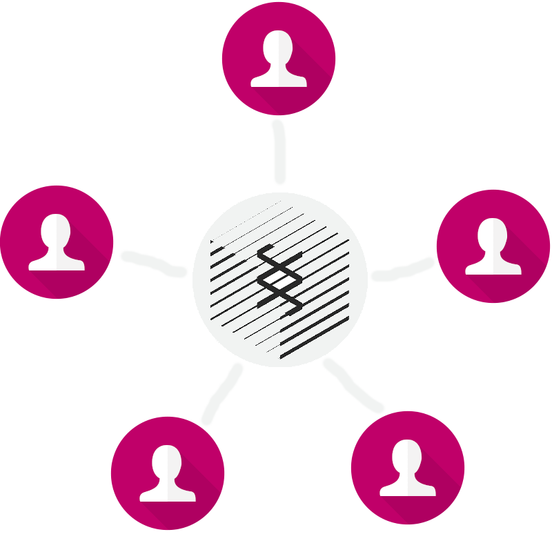
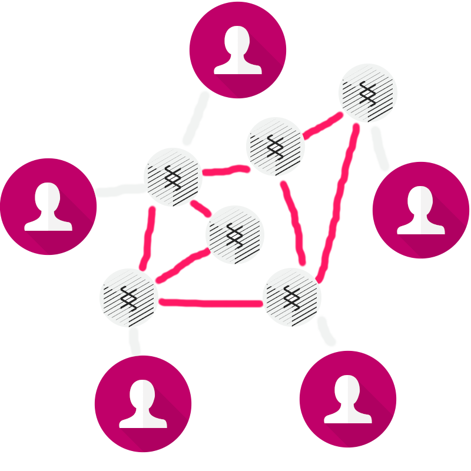
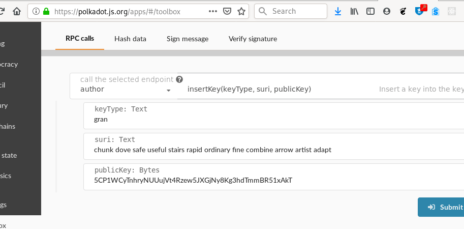
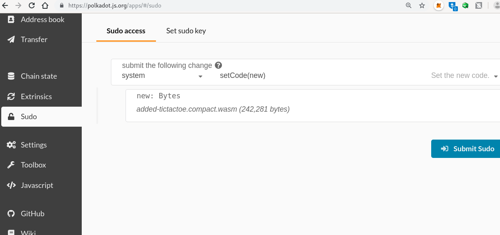

Write a Blockchain Runtime with Parity Substrate
- Joshy Orndorff
- Parity Technologies
- 18 October 2019
- joshy@parity.io
- github.com/JoshOrndorff
Flight Plan
- Play with a Web App
- Is that Blockchain!?
- Decentralize our App
- Add a Module
- Forks and Upgrades
- Remove a Module
- Governance Patterns
- Write a custom module
Play with a Web App
Try the hosted frontend
- Template for rapid UI development
- Github project https://github.com/substrate-developer-hub/substrate-front-end-template/
Apps: A Multimeter for Substrate
- Hosted at https://polkadot.js.org/apps/
- Github project https://github.com/polkadot-js/apps
Is that Blockchain!?
Is that Blockchain!?
Is that Blockchain!?

Decentralize our App
- Why Decentralize
- Immutability
- Censorship Resistance
- Verifiable
- Resiliant
- Compile the substrate-node-template
- Roughly following this tutorial
Compilation Steps
- Install system dependencies
sudo apt install cmake pkg-config libssl-dev git clang libclang-devbrew install cmake pkg-config openssl git llvm
curl --proto '=https' --tlsv1.2 -sSf https://sh.rustup.rs | shgit clone https://github.com/substrate-developer-hub/substrate-node-templatecd substratescripts/init.shcargo build --release
Blockchain is like Git
In the meantime, let's talk about how blockchain works.
Problem: Social coordination
Solution:
- Social Contract
- Shared History
Generate Two Keys
- sr25519 for Babe block production
- ed25519 for Grandpa finalization
Share your addresses, and REMEMBER YOUR PHRASES!
Join the Network
Download the chainspec file.
./target/release/node-template \
--chain=customSpecRaw.json \
--validator \
--name YOURNAME \
--telemetry-url ws://telemetry.polkadot.io:1024
RPC your key into the node at Apps > Toolbox > RPC Calls > author > insertKey
Add Tic Tac Toe Module
- Update Code
- Cargo.toml -- dependency, std feature
- lib.rs -- impl trait, costruct_runtime, bump spec version
- Recompile
cargo build --release - View the solution
Perform a Runtime Upgrade
Remove Sudo Module
- Update Code
- Cargo.toml -- dependency, std feature
- lib.rs -- impl trait, costruct_runtime, bump spec version
- chain_spec.rs -- config and import
- Recompile
cargo build --release - View the solution
Upgrade same as before
No special interface this time